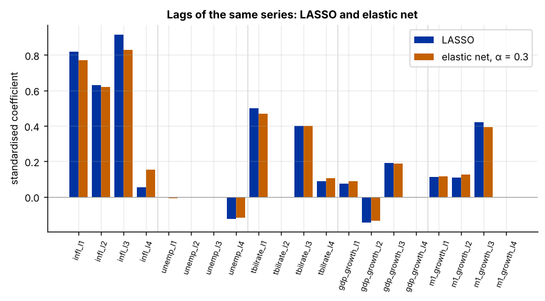
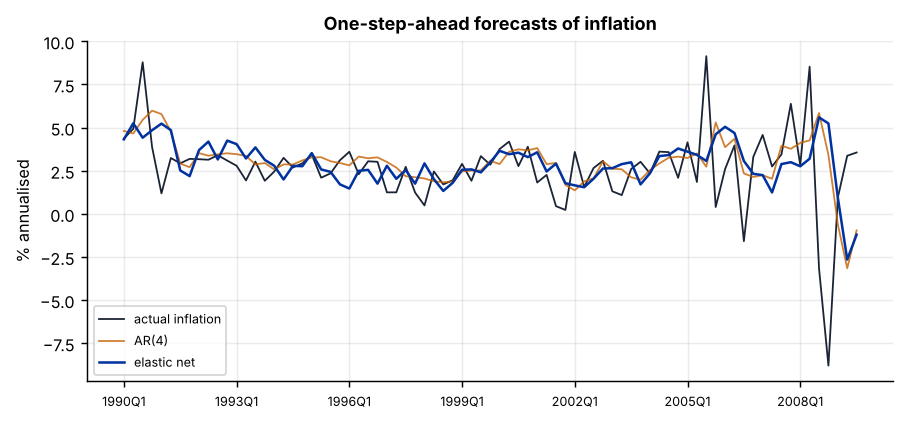

Step 1The question and the model
Can next quarter's U.S. inflation be forecast from the recent history of inflation, unemployment, interest rates, output and money? The file holds inflation and four lags of five series (20 predictors) for 198 quarters. The lags of each series are highly correlated with one another: inflation this quarter and last quarter move together. That is the setting for the elastic net (Zou and Hastie 2005), which combines the LASSO and ridge penalties:
\(\alpha = 1\) gives LASSO and \(\alpha = 0\) ridge. In between, the ridge part makes correlated predictors share their weight, and the LASSO part still sets weak groups to zero. Both \(\lambda\) and \(\alpha\) are chosen by cross-validation.
| Predictor group | Columns | Series |
|---|---|---|
| Inflation | infl_l1 … infl_l4 |
CPI inflation, annualised % |
| Unemployment | unemp_l1 … unemp_l4 |
Unemployment rate, % |
| Interest rate | tbilrate_l1 … tbilrate_l4 |
3-month Treasury bill rate, % |
| Output | gdp_growth_l1 … gdp_growth_l4 |
Real GDP growth, annualised % |
| Money | m1_growth_l1 … m1_growth_l4 |
M1 growth, annualised % |
Every predictor is dated before the quarter being forecast, so the model uses only information that was available at the time.
Step 2Load the data and test for unit roots
Machine learning does not remove the need to check stationarity. A model trained on a trending series learns the trend's past range: a random forest can never predict a value it has not seen, and a linear model on I(1) series risks a spurious fit. So each series is tested first, exactly as in the Time-Series Guide, and I(1) series are differenced.
import numpy as np
import pandas as pd
from statsmodels.tsa.stattools import adfuller, kpss
df = pd.read_csv("macro.csv")
print(f"{len(df)} quarters, {df.quarter.iloc[0]} to {df.quarter.iloc[-1]}; {df.shape[1] - 2} predictors")
for v in ["infl", "unemp_l1", "tbilrate_l1", "gdp_growth_l1", "m1_growth_l1"]:
a, k = adfuller(df[v], autolag="AIC")[1], kpss(df[v], nlags="auto")[1]
ad = adfuller(df[v].diff().dropna(), autolag="AIC")[1]
print(f"{v:14s} ADF p = {a:.3f} KPSS p = {k:.3f} ADF on difference p = {ad:.3f} -> {'I(0)' if a < .05 else 'I(1)'}")198 quarters, 1960Q2 to 2009Q3; 20 predictors infl ADF p = 0.028 KPSS p = 0.057 ADF on difference p = 0.000 -> I(0) unemp_l1 ADF p = 0.024 KPSS p = 0.100 ADF on difference p = 0.005 -> I(0) tbilrate_l1 ADF p = 0.299 KPSS p = 0.055 ADF on difference p = 0.000 -> I(1) gdp_growth_l1 ADF p = 0.000 KPSS p = 0.100 ADF on difference p = 0.000 -> I(0) m1_growth_l1 ADF p = 0.004 KPSS p = 0.100 ADF on difference p = 0.000 -> I(0)
The T-bill rate has a unit root in levels (ADF does not reject, KPSS rejects stationarity) and is stationary after one difference; inflation, unemployment, GDP growth and money growth reject the unit root at 5 %. Following the selection tool, the four T-bill lags enter in first differences.
tb = [c for c in df if c.startswith("tbilrate")]
df[tb] = df[tb].diff()
df = df.dropna().reset_index(drop=True)
y, X = df["infl"], df.drop(columns=["quarter", "infl"])
r = X.corr().abs().where(~np.eye(X.shape[1], dtype=bool))
print(f"{len(df)} quarters after differencing; largest |r| between predictors: {r.max().max():.2f} ({' and '.join(r.stack().idxmax())})")197 quarters after differencing; largest |r| between predictors: 0.97 (unemp_l3 and unemp_l4)
Several pairs of lags are correlated above 0.9, far above the 0.8 threshold: the elastic net's case.
Step 3Validate forward in time, never backward
Ordinary k-fold cross-validation shuffles the observations, so a model would be trained on 2005 and tested on 1975, using the future to predict the past. For time series, every validation fold must come after the data the model was trained on. TimeSeriesSplit does this: each split trains on an expanding window of the past and validates on the next block.
from sklearn.model_selection import TimeSeriesSplit, cross_val_score
from sklearn.pipeline import make_pipeline
from sklearn.preprocessing import StandardScaler
from sklearn.linear_model import ElasticNetCV, LassoCV, RidgeCV
from sklearn.ensemble import RandomForestRegressor
tscv = TimeSeriesSplit(n_splits=5)
for i, (tr, te) in enumerate(tscv.split(X)):
print(f"split {i + 1}: train {df.quarter[tr[0]]}-{df.quarter[tr[-1]]} validate {df.quarter[te[0]]}-{df.quarter[te[-1]]}")
rmse = lambda m: (-cross_val_score(m, X, y, cv=tscv, scoring="neg_mean_squared_error").mean()) ** .5
enet = make_pipeline(StandardScaler(), ElasticNetCV(l1_ratio=[.1, .3, .5, .7, .9, .99], cv=tscv, max_iter=50000))
cands = {"LASSO": make_pipeline(StandardScaler(), LassoCV(cv=tscv, max_iter=50000)),
"ridge": make_pipeline(StandardScaler(), RidgeCV(alphas=np.logspace(-2, 4, 50))),
"elastic net": enet,
"random forest": RandomForestRegressor(n_estimators=300, min_samples_leaf=5, max_features=.5, random_state=0)}
for k, m in cands.items():
print(f"{k:14s} rolling-origin CV RMSE = {rmse(m):.3f}")split 1: train 1960Q3-1969Q3 validate 1969Q4-1977Q3 split 2: train 1960Q3-1977Q3 validate 1977Q4-1985Q3 split 3: train 1960Q3-1985Q3 validate 1985Q4-1993Q3 split 4: train 1960Q3-1993Q3 validate 1993Q4-2001Q3 split 5: train 1960Q3-2001Q3 validate 2001Q4-2009Q3 LASSO rolling-origin CV RMSE = 2.853 ridge rolling-origin CV RMSE = 2.831 elastic net rolling-origin CV RMSE = 2.803 random forest rolling-origin CV RMSE = 3.113
The elastic net has the lowest rolling-origin error, LASSO is close, and the random forest is clearly worse: a nonlinear model does not help here (Rule A3), and with lags correlated above 0.8 the tool chooses the elastic net (Rule A4).
Step 4Grouped selection: elastic net against LASSO
Fit both on the full sample and compare which lags they keep. Within a group of correlated lags, LASSO tends to keep one or two and drop the rest; the elastic net, the more so the smaller its mixing weight α, spreads the weight. To see the effect, the table also shows an elastic net with α fixed at 0.3.
Xs = StandardScaler().fit_transform(X)
en = ElasticNetCV(l1_ratio=[.1, .3, .5, .7, .9, .99], cv=tscv, max_iter=50000).fit(Xs, y)
la = LassoCV(cv=tscv, max_iter=50000).fit(Xs, y)
print(f"elastic net: alpha (mixing) = {en.l1_ratio_}, lambda = {en.alpha_:.3f}")
from sklearn.linear_model import ElasticNet
e3 = ElasticNetCV(l1_ratio=.3, cv=tscv, max_iter=50000).fit(Xs, y)
tab = pd.DataFrame({"LASSO": la.coef_, "elastic net (CV α)": en.coef_, "elastic net (α = 0.3)": e3.coef_}, index=X.columns).round(3)
print(tab)
print(f"\nnon-zero: LASSO {int((la.coef_ != 0).sum())}, elastic net (CV) {int((en.coef_ != 0).sum())}, elastic net (α = 0.3) {int((e3.coef_ != 0).sum())} of {X.shape[1]}")elastic net: alpha (mixing) = 0.9, lambda = 0.054
LASSO elastic net (CV α) elastic net (α = 0.3)
infl_l1 0.819 0.816 0.770
infl_l2 0.631 0.630 0.619
infl_l3 0.916 0.909 0.830
infl_l4 0.054 0.061 0.153
unemp_l1 -0.000 -0.000 -0.007
unemp_l2 -0.000 -0.000 -0.000
unemp_l3 -0.000 -0.000 -0.000
unemp_l4 -0.124 -0.122 -0.117
tbilrate_l1 0.500 0.498 0.467
tbilrate_l2 0.000 0.000 0.000
tbilrate_l3 0.400 0.400 0.402
tbilrate_l4 0.089 0.089 0.106
gdp_growth_l1 0.073 0.073 0.089
gdp_growth_l2 -0.145 -0.143 -0.135
gdp_growth_l3 0.192 0.191 0.189
gdp_growth_l4 0.000 0.000 0.000
m1_growth_l1 0.111 0.111 0.115
m1_growth_l2 0.109 0.110 0.127
m1_growth_l3 0.422 0.419 0.393
m1_growth_l4 -0.000 -0.000 0.000
non-zero: LASSO 14, elastic net (CV) 14, elastic net (α = 0.3) 15 of 20import matplotlib.pyplot as plt
grp = X.columns.str.replace(r"_l\d$", "", regex=True)
fig, ax = plt.subplots()
xpos = np.arange(len(X.columns))
ax.bar(xpos - .2, la.coef_, .4, label="LASSO"); ax.bar(xpos + .2, e3.coef_, .4, label="elastic net, α = 0.3")
ax.set_xticks(xpos); ax.set_xticklabels(X.columns, rotation=70, fontsize=7); ax.axhline(0, color="#999", lw=.6)
for b in range(4, len(X.columns), 4): ax.axvline(b - .5, color="#ccc", lw=.6)
ax.set_ylabel("standardised coefficient"); ax.set_title("Lags of the same series: LASSO and elastic net"); ax.legend()
Cross-validation chooses a mixing weight of α = 0.9, close to LASSO, so here the two give almost the same coefficients: the data prefer a mostly-LASSO penalty with a little ridge stabilisation. The α = 0.3 column shows what a stronger ridge component does: weight is spread across correlated lags (the third lag of inflation loses weight to the fourth, which almost triples) and one more lag (unemp_l1) enters. Report the cross-validated α, and show that the main conclusions do not depend on it. In every version the first three lags of inflation dominate, followed by the T-bill rate and money growth.
Step 5A real forecasting test: recursive one-step-ahead forecasts
The honest test of a forecasting model is to simulate using it in real time. From 1990 onwards, each quarter the model is re-estimated on all data up to the previous quarter (penalty re-chosen each time) and forecasts the next quarter. The benchmark every forecasting paper must beat is a simple AR(4) model of inflation on its own four lags, estimated the same way.
from sklearn.linear_model import LinearRegression
start = df.index[df.quarter == "1990Q1"][0]
fc = {"AR(4)": [], "elastic net": [], "LASSO": []}
for t in range(start, len(df)):
Xtr, ytr, Xte = X.iloc[:t], y.iloc[:t], X.iloc[[t]]
fc["AR(4)"].append(LinearRegression().fit(Xtr.filter(like="infl_l"), ytr).predict(Xte.filter(like="infl_l"))[0])
fc["elastic net"].append(make_pipeline(StandardScaler(), ElasticNetCV(l1_ratio=[.1, .5, .9, .99], cv=TimeSeriesSplit(5), max_iter=50000)).fit(Xtr, ytr).predict(Xte)[0])
fc["LASSO"].append(make_pipeline(StandardScaler(), LassoCV(cv=TimeSeriesSplit(5), max_iter=50000)).fit(Xtr, ytr).predict(Xte)[0])
F = pd.DataFrame(fc, index=df.quarter[start:]); F["actual"] = y.iloc[start:].to_numpy()
err = F.drop(columns="actual").sub(F["actual"], axis=0)
print(f"{len(F)} one-step-ahead forecasts, {F.index[0]} to {F.index[-1]}")
print((err ** 2).mean().pow(.5).round(3).rename("RMSE").to_frame().assign(relative_to_AR=lambda d: (d.RMSE / d.RMSE["AR(4)"]).round(3)))79 one-step-ahead forecasts, 1990Q1 to 2009Q3
RMSE relative_to_AR
AR(4) 2.518 1.000
elastic net 2.672 1.061
LASSO 2.666 1.059A ratio below 1 means the model beats the AR(4) benchmark. Here it does not: both penalised models forecast about 6 % worse than the AR(4) over 1990–2009. Whether a difference is statistically significant is tested with the Diebold–Mariano test on the loss differences (with a Newey–West variance, because forecast errors are serially correlated):
import statsmodels.api as sm
for m in ["elastic net", "LASSO"]:
dl = err[m] ** 2 - err["AR(4)"] ** 2
dm = sm.OLS(dl.to_numpy(), np.ones(len(dl))).fit(cov_type="HAC", cov_kwds={"maxlags": 4})
print(f"{m:12s} vs AR(4): mean loss difference {dl.mean():+.3f}, DM t = {dm.tvalues[0]:.2f}, p = {dm.pvalues[0]:.3f}")
fig, ax = plt.subplots()
xx = np.arange(len(F))
ax.plot(xx, F["actual"], color="#1b2437", lw=1, label="actual inflation")
ax.plot(xx, F["AR(4)"], color="#c46000", lw=1, alpha=.8, label="AR(4)")
ax.plot(xx, F["elastic net"], color="#0033a0", lw=1.4, label="elastic net")
ax.set_xticks(xx[::12]); ax.set_xticklabels(F.index[::12], fontsize=7)
ax.set_ylabel("% annualised"); ax.set_title("One-step-ahead forecasts of inflation"); ax.legend(fontsize=7)elastic net vs AR(4): mean loss difference +0.796, DM t = 1.36, p = 0.175 LASSO vs AR(4): mean loss difference +0.765, DM t = 1.28, p = 0.200

Step 6Write it up
The difference is not significant (p ≈ 0.2): the twenty extra predictors neither help nor clearly hurt. This is a well-known result, not a failure of the method: since the mid-1980s, inflation has been hard to forecast with anything better than its own recent history (Atkeson and Ohanian 2001; Stock and Watson 2007). A paper must report it honestly. The elastic net is still the right tool for the question which lags carry information; the forecasting test says that, out of sample, the information beyond inflation's own lags is small.
How to write it: method and results
We forecast quarterly CPI inflation with an elastic net on four lags of inflation, unemployment, the change in the Treasury-bill rate (the level has a unit root), real GDP growth and M1 growth. Because lags of the same series are highly correlated (|r| up to 0.97), we prefer the elastic net to LASSO, which selects arbitrarily within correlated groups. Penalty and mixing weight are chosen by rolling-origin cross-validation, so that no model is ever validated on data earlier than its training sample. Cross-validation selects a mixing weight of 0.9, close to LASSO; the first three lags of inflation, the change in the T-bill rate and lagged money growth carry most of the weight. In recursive one-step-ahead forecasts over 1990Q1–2009Q3, re-estimating the model each quarter, the elastic net does not improve on an AR(4) benchmark: its RMSE is 2.67 percentage points against 2.52, and a Diebold–Mariano test with HAC variance does not reject equal accuracy (p = 0.18). Consistent with Atkeson and Ohanian (2001), the additional macroeconomic predictors contain little information about future inflation beyond its own history.
Checklist for the paper
- Test every series for a unit root and difference I(1) series before any learning.
- Date every predictor before the forecast target; never let future information in.
- Use rolling-origin (expanding-window) validation, not shuffled k-fold.
- Report the chosen mixing weight α and penalty λ, and which lags survive.
- Compare recursive out-of-sample forecasts with an AR benchmark; report the RMSE ratio and a Diebold–Mariano test.